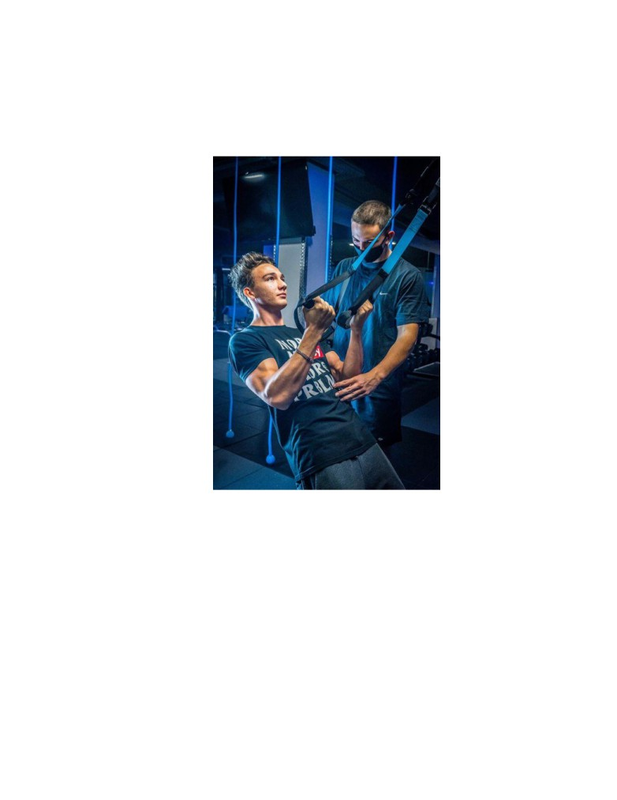

Sava Cristina-Andreea
Pandemia VS Antrenorii personali
Sălile de fitness în perioada pandemiei au avut de suferit, la fel și antrenorii
personali care și-au pierdut din clenți. Anul 2020 a fost o perioadă în care toate afacerile au început
să descrească, împiedicând antreprenorii din a prospera.
Pandemia care a încetinit progresul lumii. Al omenirii.Fiind în carantină acasă m-am tot
gândit la micile afaceri în perioada asta. M-am gândit la cum trebuie să fie să îți începi cu atâta
dorință și greu o afacere, ca mai apoi să fie stopată de un virus global.M-am gândit la cum se
descurcă cei care aveau un loc de muncă, pe mult prea multe domenii. Atât m-am gândit și
...răzgândit până în punctul în care lucrurile au reînceput să funcționeze normal. Suntem într-un
alt stadiu, am adoptat deja o altă gândire față de virusul care ne-a blocat. Învățăm să trăim cu
el.Acum îmi rămâne doar să îmi hrănesc mintea. Cum? Cercetând despre ceea ce m-a frământat
cât a trebuit să stăm în case. De unde să încep ? De la locurile care au cel mai mare risc de
contaminare, sălile de fitness. Mintea mea îmi spunea că acolo nu se poartă mască, nu se respectă
regulile de distanțare socială, ce să mai zic de faptul că se ating toate mașinăriile fără a fi
dezinfectate? Așadar, am pornit în oraș în căutarea unei lămuriri și a unei cercetări în domeniu. Cu
puțină teamă am reușit să intru în sala de antrenamente din Miercurea Ciuc, Powerhuni Gym, azi
am avut în sfârșit curajul să cercetez puțin.
Puțin temătoare, am ajuns în centrul unde antrenorii se ocupau de oamenii pe care îi au sub
antrenare. Speram să îl găsesc pe fostul meu coleg, Eduard Bujac, să am o față familiară care să
mă ghideze în ceea ce voiam să aflu. Eduard e un băiat bine făcut (se vede că e pasionat de sport)
, înalt , are o statură poate puțin dominantă. Îi place să glumească și îi place la fel de mult să
muncească. Am avut întotdeauna o admirație față de munca pe care el a depus-o în atingerea
scopurilor sale. Mi-a plăcut la el faptul că deși avea școală, în paralel reușea să meargă la sală și
să își concentreze energia și acolo.
După ce am rătăcit puțin prin sală, respectând regulile de distanțare socială și surprinzându-
i pe cei care lucrau din greu, l-am observat pe Eduard cum a intrat în incintă. A venit cu Bogdan
Vâga , băiatul pe care îl atrenează în prezent la sala din Ciuc. I-am lăsat să se instaleze unde aveau
treabă și cu puțin mai multă încredere i-am adresat lui Eduard salutul meu.
Mi-am regândit întrebările pentru a-mi hrăni curiozitatea și cercetarea care urma.Eram
foarte curioasă de cum a reușit el să ajungă atât de sus.
-Când te-ai decis că vrei să profesezi în domeniul ăsta și să fii antrenor personal?
Eduard a stat o secundă și s-a gândit la răspunsul potrivit pentru mine. Sunetul oamenilor
care trăgeau de fiare și atmosfera de muncă îmi dădeau emoții în legătură cu răspunsul lui. Să nu
mai spun de statura lui, mult mai mare decât a mea, care reușea să mă facă să mă simt și mai ciudat
de mediul în care mă aflam în cercetarea mea.
Sava Cristina-Andreea
-În iunie m-am hotărât că vreau să fac asta și am terminat în Ciuc un curs alături de un
campion mondial, ceea ce a făcut toată experiența mult mai interesantă. Dorința mea a fost să ajung
la Cluj la facultate și acolo să mă dezvolt.
Am rămas puțin perplexă de faptul că a luat decizia în plină pandemie, tocmai pentru că
majoritatea afacerilor au luat-o la vale și îmi era teamă că ar putea să îmi spună că nu îi merge nici
lui foarte bine.
-Ai avut ajutor în a ajunge unde vrei ?
M-am gândit că răspunsul lui o să fie unul afirmativ, fiind un domeniu în care ai nevoie de
îndrumare ca să poți prospera.
-Da, m-au ajutat antrenorii din Ciuc. Am cerut sfaturi pentru a-mi alege o sală bună, ce
prețuri și ce se cere la Cluj, fiind un oraș mai dezvoltat și mai scump decât Ciucul unde am fost eu
obișnuit.
Știam că Eduard este la facultate în Cluj, și mă gândeam că o să vrea să își desfășoare mai
activitatea acolo, mai mult decât în orașul în care locuiam amândoi, respectiv Miercurea Ciuc, care
nu îi oferea prea multe posibilități, fiind un oraș mai mic. Voiam să aflu mai mult. Mi-a strârnit
prea tare curiozitatea. Am aruncat întrebarea care era ca o bombă cu ceas în mintea mea, gata să
explodeze.Acum vine!
-Cât de greu ți-a fost la început având în vedere toată situația cu pandemia?
A venit. Ard de nerăbdare să aud răspunsul lui. Luminile puternice din sală și muzica
zgomotoasă îmi crează un extaz și mai mare. Muzica menită să îți crească energia, mie mi-a crescut
mai mult pulsul și îmi doream să ascult însetată răspunsul lui și să sorb fiecare cuvânt.
-A fost greu și încă este greu. Oamenilor le este frică, nu vin la sală pentru că au impresia
că o să se închidă și nu o să poată continua antrenamentele.
Stai.Am înlemnit o secundă. Le este frică de asta, nu de virus? În gândirea mea, frica de
virul ocupa un loc mai mare decât ce mi-a spus el, de aceea am rămas surprinsă să aflu că în
gândirea celor pasionați de acest sport, treaba stătea altfel.
-Eu am avut trei-patru clienți cu care urma să mă antrenez la Cluj
, însă datorită
învățământului online , nu s-au mutat și i-am pierdut. A continuat el. Noi respectăm regulile de
distanțare, plus că sportul ajută la întărirea imunității, însă oamenii nu au pe deplin încredere să
vină în perioada asta. E greu, dar ne adaptăm.
Aici am amuțit. „E greu, dar ne adaptăm.” . Niște cuvinte puține, cu foarte mult impact
asupra mea. Am găsit tot ce căutam. Am mai schimbat câteva vorbe cu el, i-am urat succes și cu
coada între picioare am ieșit din sală.
Am realizat că începutul unei meserii ca aceasta în pandemie e foarte dificil. Bănuiam că
debutul unei astfel de afaceri este greu și într-o perioadă normală, iar faptul că anul 2020 nu ne-a
oferit această libertate, m-a făcut să îl admir și mai mult pentru ceea ce face. Mai mult decât am
crezut. M-a impresionat ce mi-a zis și m-a făcut să vreau să aflu mai mult. Vreau să vorbesc cu și

Sava Cristina-Andreea
mai mulți antrenori care reușesc să își mențină entuziasmul și mica afacere. Vreau să aflu și mai
multe, pentru că mi s-a părut o poveste care merită să fie menținută și urmărită. Voiam să vorbesc
cu Eduard și mai multe, să îi urmăresc evoluția pe care acesta o să reușească să o aibă, pentru că
sunt sigură că o să prospere în ceea ce își propusene. Poate mă pasionează așa tare încât o să le
devin clientă. Puțin sport nu strică. Dar numai în condiții de siguranță.